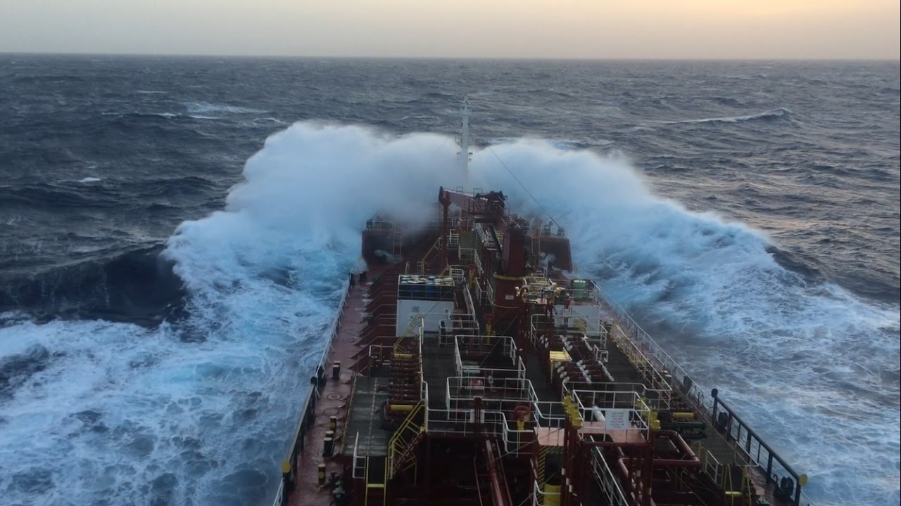
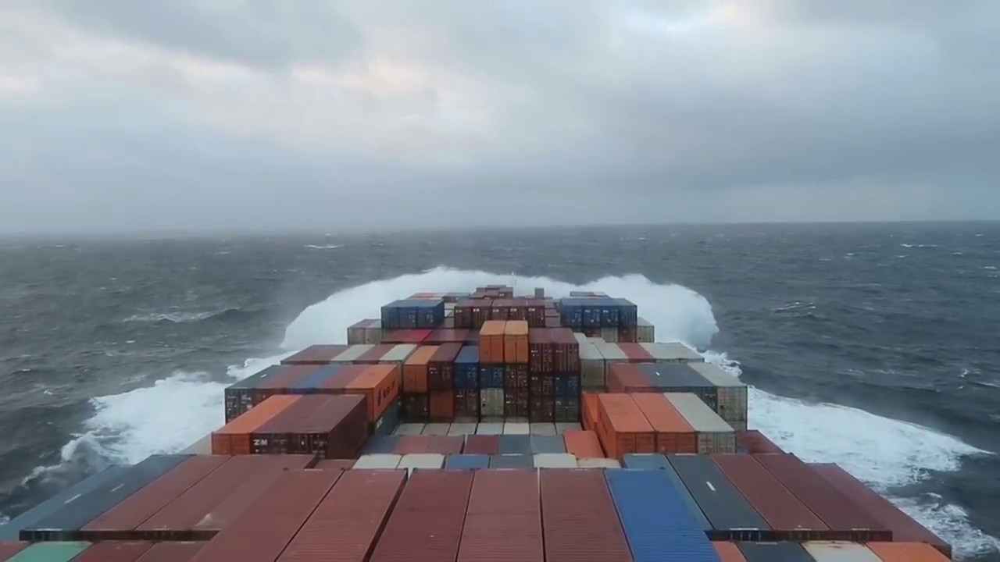

“Don’t you get seasick?!” One of the most common questions when a sailor proclaims proudly that he works on a ship. Seasickness is a condition that affects few. Is it not mandatory for every seafarer to feel seasick! Much like motion sickness, seasickness is subjective and affects people on a case-to-case basis. And no, it is not a big deal. People get it and then get over it gradually. Every seafarers might get homesick at some point in their careers, but there is no surety that everyone will get seasick.
There’s a universal idea that all seafarers have a ‘common 6 months on, 6 months off’ regime. So naturally, they believe that the life is easy for we work for 6 months and laze around for the other 6! Ridiculous, come to think of it. First of all, contracts differ in tenure. It can be 4 on, 2 off or a variety of other combinations depending on the rank and company. Secondly, the months that we don’t work, we’re only spending and not earning. Even with companies that pay while their seafarers are at home, it’s normally much reduced. Third, the work that we do over the few months that we are onboard, makes it necessary for us to go back home and relax; else we’d all go berserk! Couple that with handling family, relationships, exams etc. and we barely get proper time to completely switch off.
